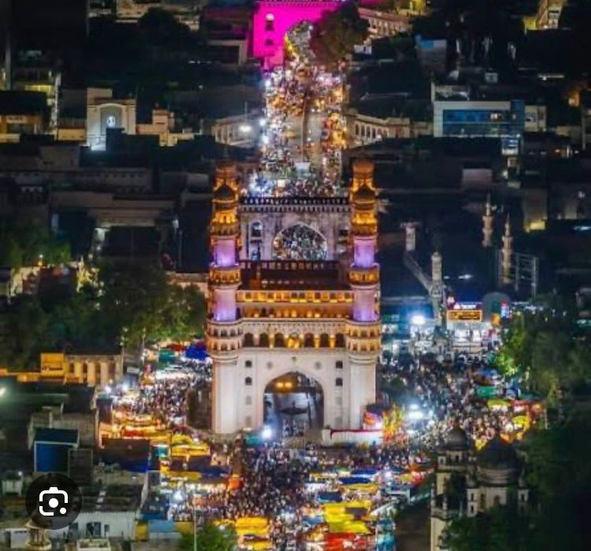
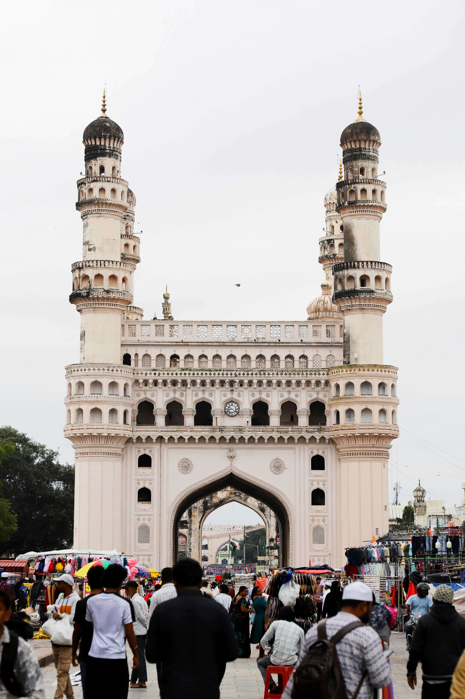

Charminar
The Charminar is a well-known monument in Hyderabad located at the center of the old city. It was constructed by Sultan Muhammad Quli Qutb Shah in 1591 at a time the city was in the grips of a serious plague. The word Charminar means "four towers," which represent the four tall towers the structure has. The structure is unique, composed of granite, limestone, and marble, reinforcing a wonderful incorporation of Persian and Indian architecture. Next to the Charminar is the bustling Laad Bazaar, where colorful bangles, pearls, smelling perfumes, and delicious traditional food are sold. The combination of busy, colorful streets makes Charminar a monument in the true sense of the word, but it is also a monument to the culture of Hyderabad.  